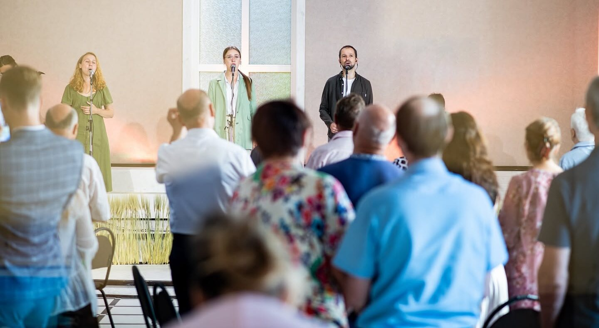
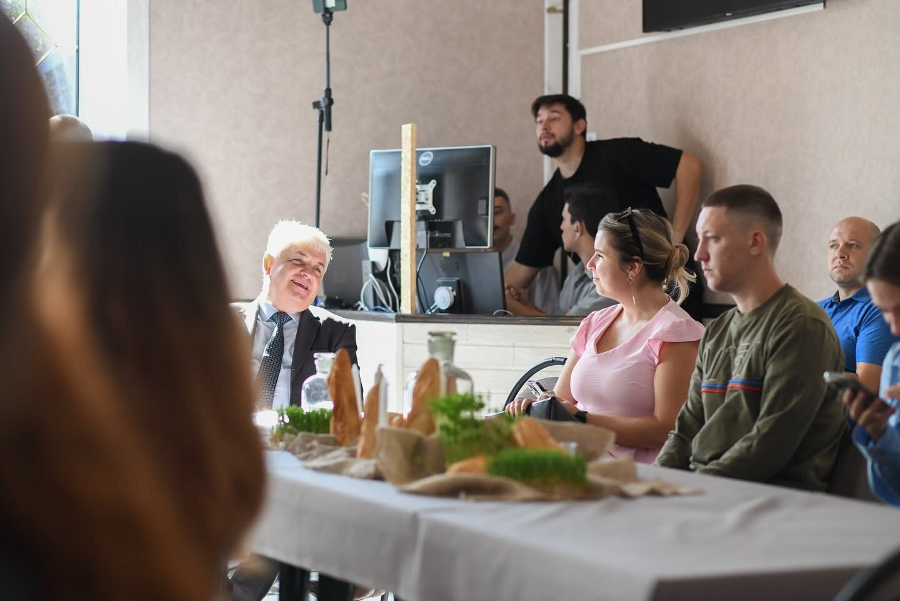
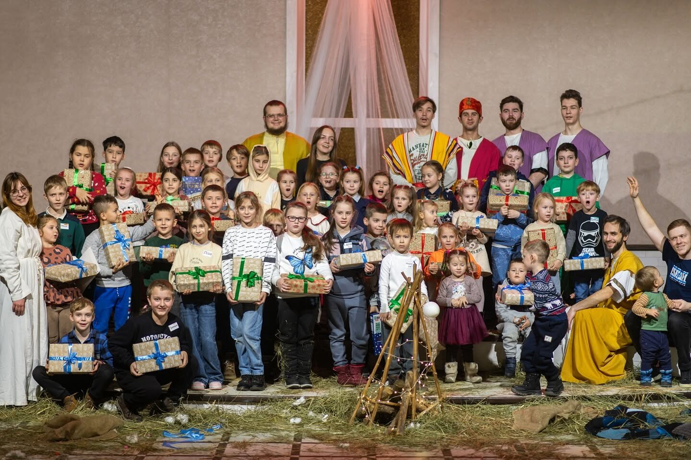
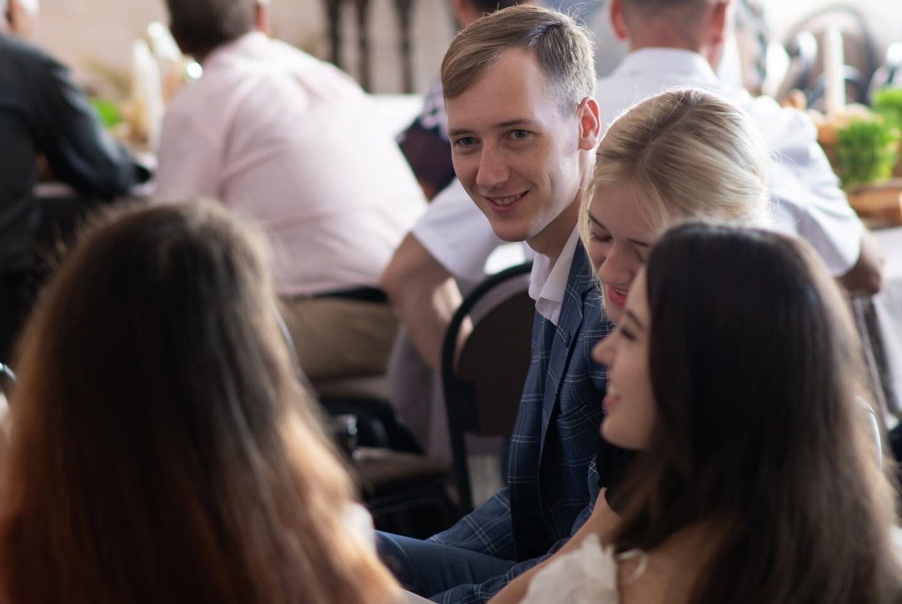
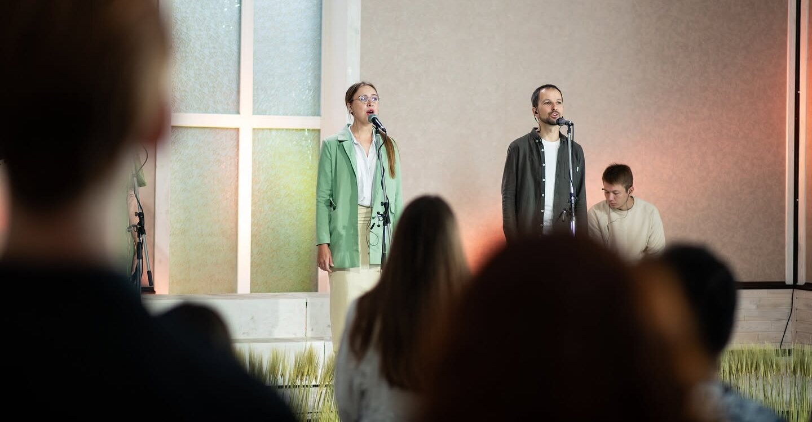
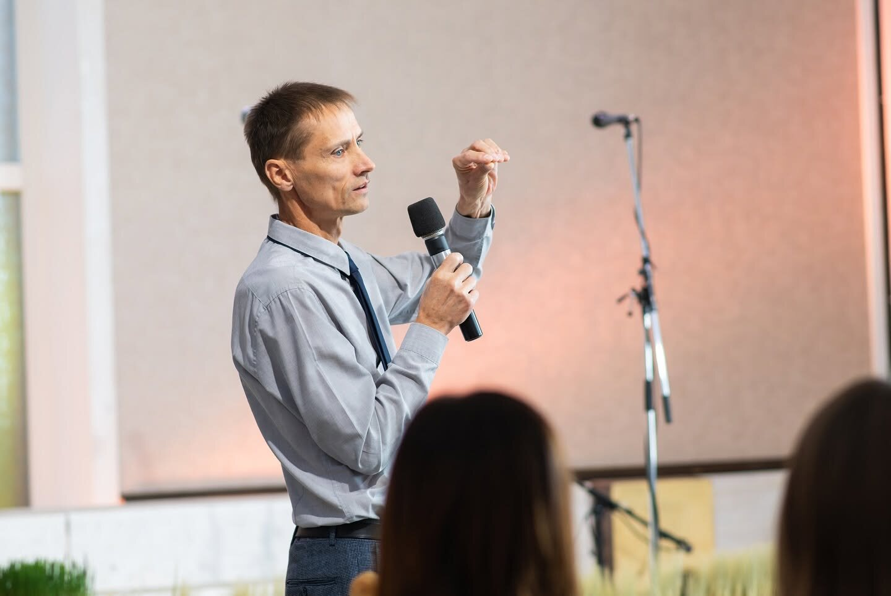
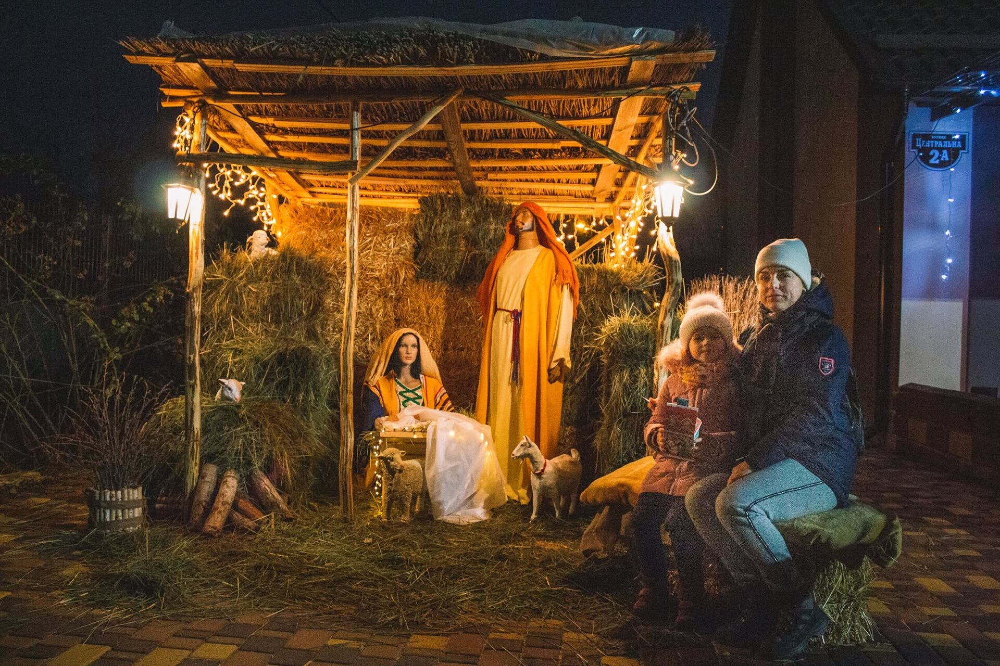
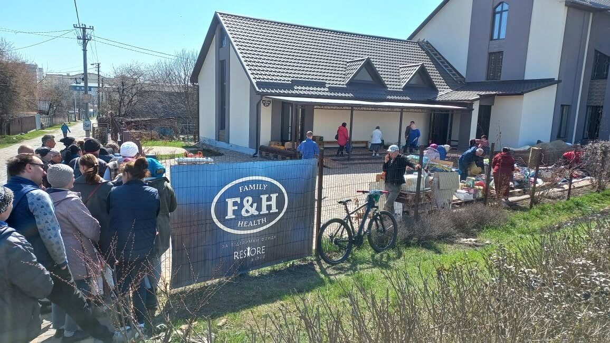
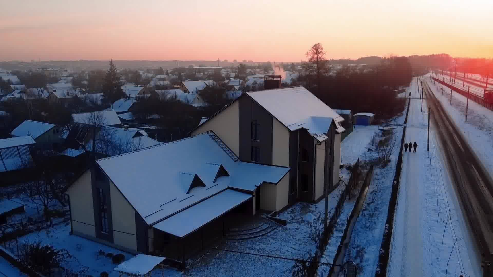

Прийти в суботу
Богослужіння о 10:00 на вул. Центральній, 2А.
Як дістатися
Не ідеальні люди, але служимо досконалому Богу.

Адвентисти сьомого дня збираються на богослужіння в суботу, а не в неділю.
Людмила Штанько, 14 листопада
Прийдіть особисто, дивіться онлайн або почніть з курсу.
Богослужіння о 10:00 на вул. Центральній, 2А.
Як дістатисяПрямий ефір щосуботи з 11:30 на нашому YouTube-каналі.
Відкрити YouTubeВідеокурси, які можна дивитись у своєму темпі.
Обрати курсМаєте питання чи прохання про молитву? Напишіть нам.
НаписатиВідповіді на прості й непрості питання життя.
Серії відео про віру та Біблію. Оберіть тему і дивіться з першого випуску.
«Світ на порозі змін» — курс з основ Біблії.
Ми християнська церква з Бучі, яка любить Бога і прагне служити суспільству.
Християнська церква в Бучі. Проповіді, молитва, духовна підтримка та живі історії людей з нашого міста. Адвентисти сьомого дня — протестантська церква; ми збираємося на богослужіння в суботу.
Що відбувається в нашій церкві, крім суботнього богослужіння.

Дитяче служіння і благодійна акція «Діти дітям»: діти збирають подарунки іншим дітям.
Дивитись в Instagram
Молодіжне служіння церкви.
Дивитись в Instagram
Хор і музичне служіння. Послухайте «Живеш в мені Ти», Інга Шнуренко.
Слухати
Пастор і проповідники церкви. Записи — на YouTube.
Дивитись
Живий вертеп біля церкви.
Дивитись в Instagram
Роздача гуманітарної допомоги біля церкви.
Дивитись у Facebook
Богослужіння щосуботи о 10:00. Прямий ефір на YouTube з 11:30.
Прокласти маршрут